Tomas Petricek, Charles University, Prague
From plugging cables...
Programming the ENIAC
...to languages?
Algol language definition
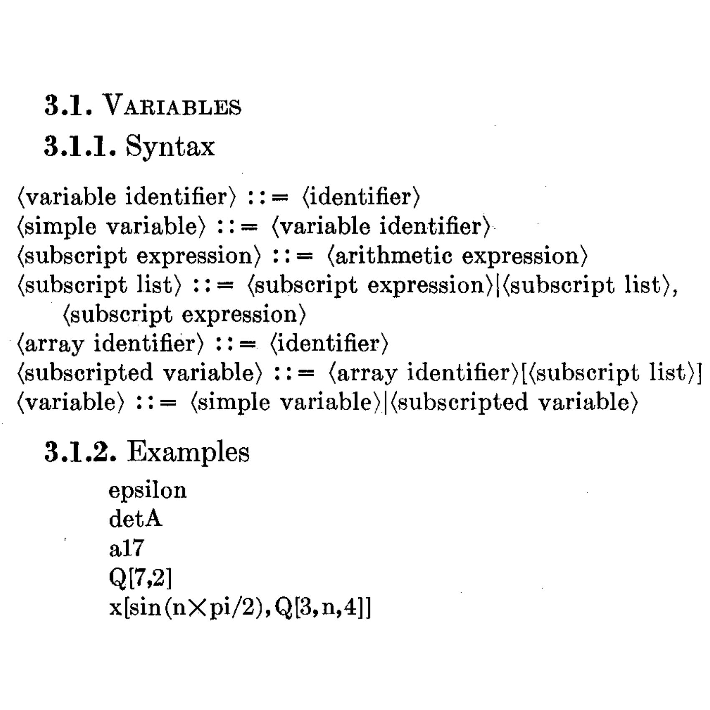
Female computers doing numerical calculations by hand!
Patsy Simmers, Mrs. Gail Taylor, Mrs. Milly Beck, Mrs. Norma Stec
Trajectory of a shell in 20 sec, not 40 hours
Labeled ping pong balls showing the "memory"
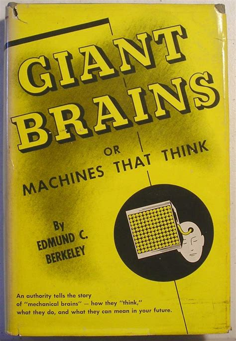
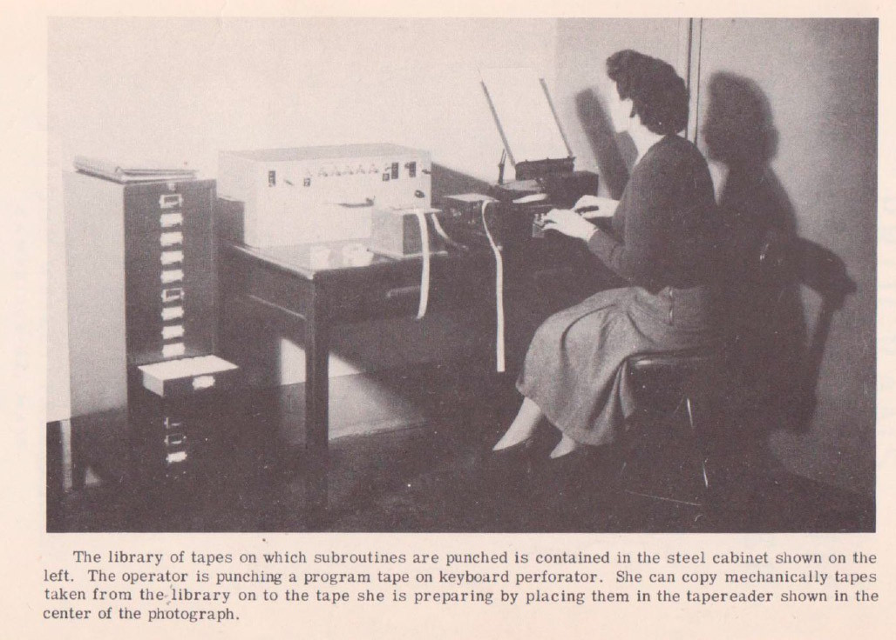
Open sub-routines
Copied at each point
Closed sub-routines
Using control transfer
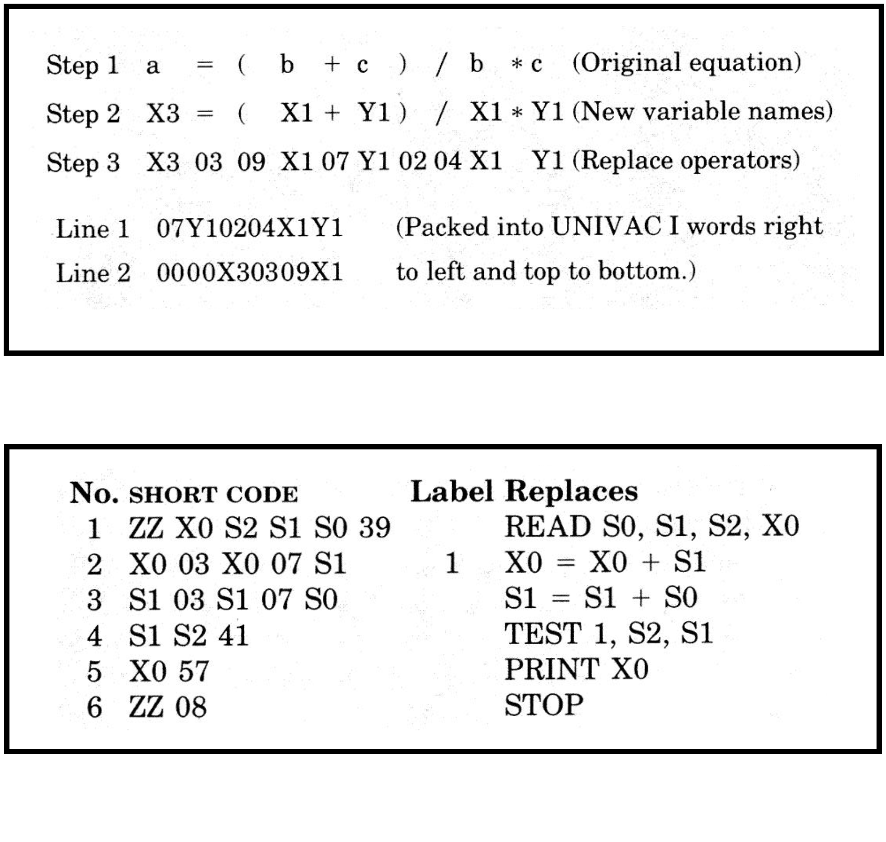
Step 2 to Step 3 translation done automatically
by an editor
Not exactly a
language yet...
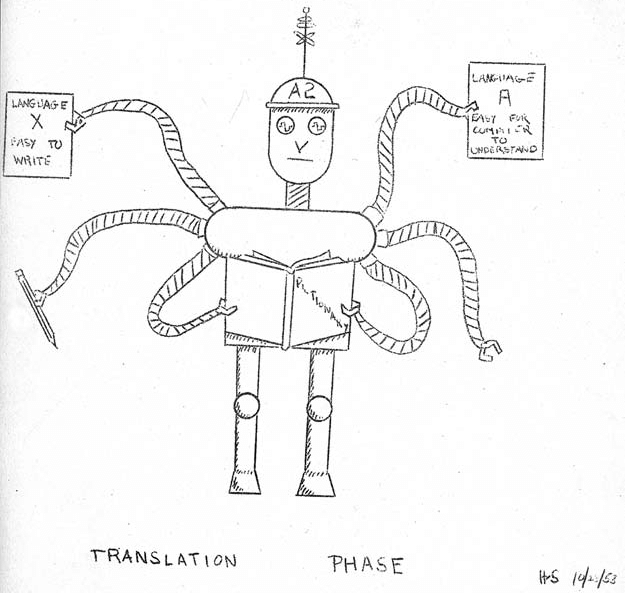
Hopper's illustration of the A-2 compiler (1954)
From giant electronic brains to logic and linguistics
Formal languages and grammars for description
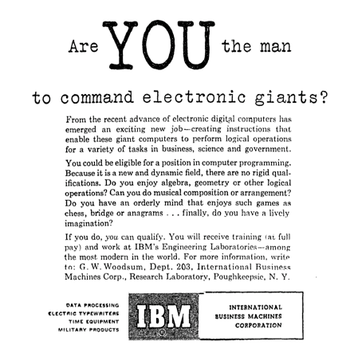
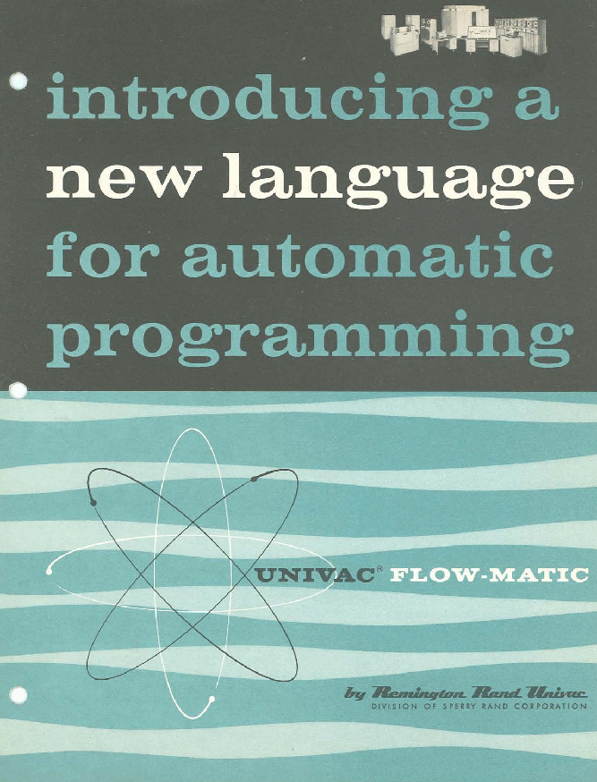
User groups and computer installation managers
Solve the software gap!
Common universal notations
Cross-machine compatibility
Allow program exchange
Teaching at universities
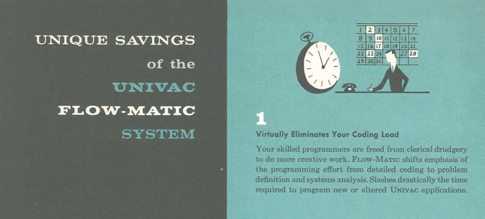
Would you guess the publication year (1957)?
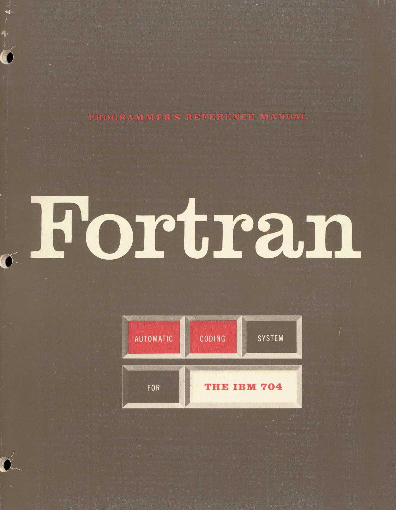
John Backus (IBM, 1957)
Translation metaphor, hacker tricks, managerial need
Not referred to as a programming language!
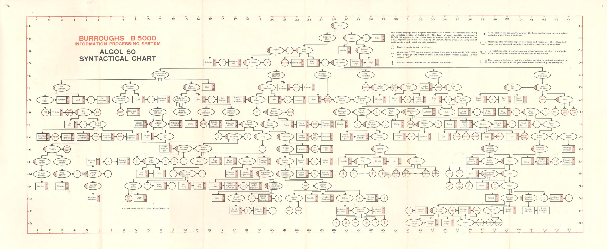
International Algebraic Language (IAL, 1958)
A formal mathematical, linguistic object, not just a messy adjunct to the technical business of getting a computer to run.
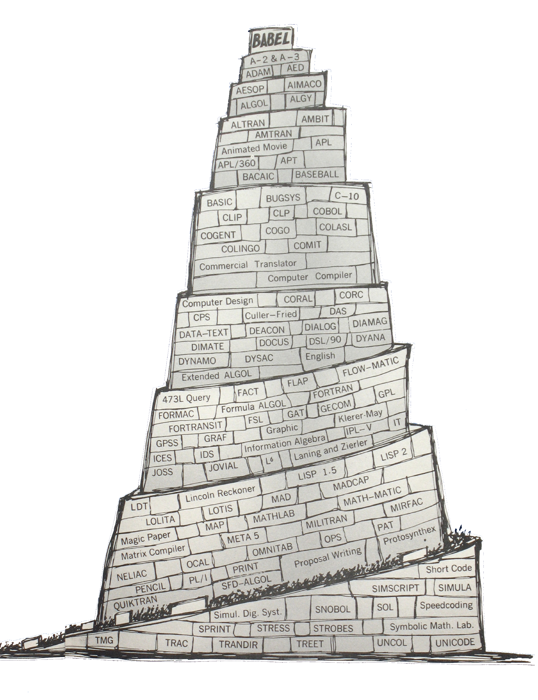